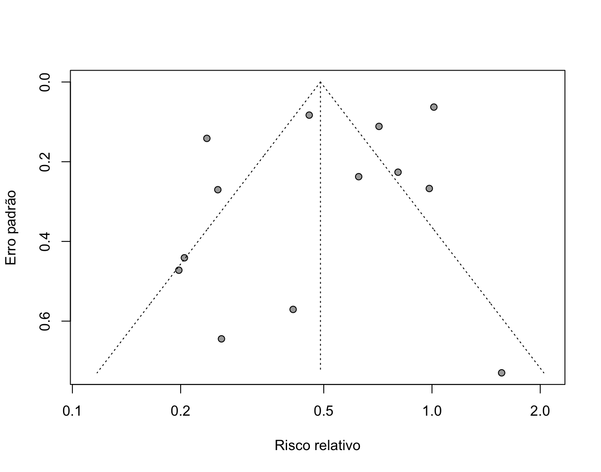
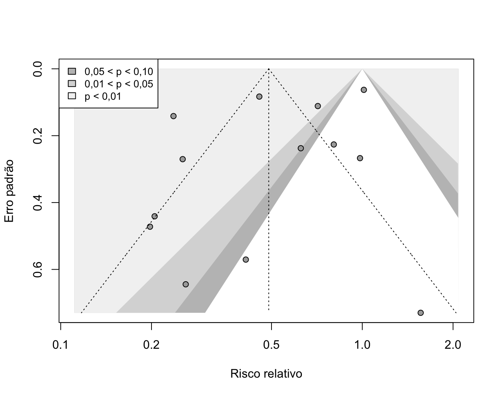
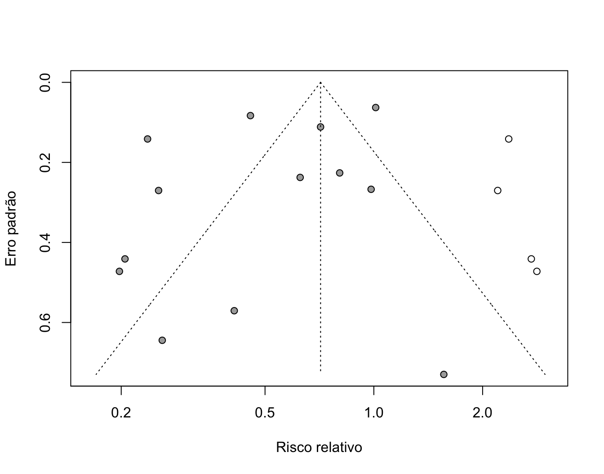

| Author | Year | event.e | n.e | event.c | n.c |
|---|---|---|---|---|---|
| Aronson | 1948 | 4 | 123 | 11 | 139 |
| Ferguson & Simes | 1949 | 6 | 306 | 29 | 303 |
| Rosenthal et al | 1960 | 3 | 231 | 11 | 220 |
| Hart & Sutherland | 1977 | 62 | 13598 | 248 | 12867 |
| Frimodt-Moller et al | 1973 | 33 | 5069 | 47 | 5808 |
| Stein & Aronson | 1953 | 180 | 1541 | 372 | 1451 |
| Vandiviere et al | 1973 | 8 | 2545 | 10 | 629 |
| TPT Madras | 1980 | 505 | 88391 | 499 | 88391 |
| Coetzee & Berjak | 1968 | 29 | 7499 | 45 | 7277 |
| Rosenthal et al | 1961 | 17 | 1716 | 65 | 1665 |
| Comstock et al | 1974 | 186 | 50634 | 141 | 27338 |
| Comstock & Webster | 1969 | 5 | 2498 | 3 | 2341 |
| Comstock et al | 1976 | 27 | 16913 | 29 | 17854 |
10 Viés de publicação
Estudos com resultados estatisticamente significativos ou favoráveis à intervenção têm mais chance de serem publicados, e de forma mais rápida, do que estudos com resultados nulos. Quando isso acontece, a literatura disponível para a metanálise fica incompleta, e o efeito combinado pode ser superestimado. Esse fenômeno é chamado de viés de publicação.
Neste capítulo, vamos aprender três ferramentas para investigar esse problema: o gráfico de funil (funnel plot), o teste de Egger e o método trim-and-fill.
NotaPlanilha de exemplo
Para acompanhar este capítulo, baixe a planilha bcg.xlsx e salve-a no seu diretório de trabalho. Ela reúne os dados de 13 ensaios clínicos sobre a eficácia da vacina BCG na prevenção da tuberculose (Colditz GA et al. Efficacy of BCG vaccine in the prevention of tuberculosis: meta-analysis of the published literature. JAMA, 1994;271:698-702), também disponíveis no pacote metadat como dat.bcg.
💡 Por que não usamos a planilha dos capítulos anteriores? Os testes de assimetria do gráfico de funil só são recomendados quando a metanálise inclui pelo menos 10 estudos, e a planilha data.xlsx tem apenas 7. Com poucos estudos, esses testes têm baixo poder para detectar o problema.
10.1 Carregando os Pacotes
library(readxl) # Importar planilhas do Excel
library(meta) # Realizar a metanálise10.2 Preparando seu Conjunto de Dados
A planilha segue a mesma estrutura da utilizada no capítulo 7:
- Author e Year → Identificação e ano do estudo.
- event.e e n.e → Casos de tuberculose e total de participantes no grupo vacinado.
- event.c e n.c → Casos de tuberculose e total de participantes no grupo não vacinado.
10.3 Realizando a Metanálise
Primeiro, importamos os dados e realizamos a metanálise com a função metabin(), exatamente como no capítulo 7. Neste exemplo, usaremos o risco relativo ("RR") como medida de efeito:
bcg <- as.data.frame(read_excel("bcg.xlsx", sheet = "tb"))
m.bcg <- metabin(
event.e,
n.e,
event.c,
n.c,
data = bcg,
method = "MH",
method.tau = "DL",
sm = "RR",
studlab = Author
)
m.bcgNumber of studies: k = 13
Number of observations: o = 357347 (o.e = 191064, o.c = 166283)
Number of events: e = 2575
RR 95% CI z p-value
Common effect model 0.6353 [0.5881; 0.6862] -11.53 < 0.0001
Random effects model 0.4896 [0.3448; 0.6952] -3.99 < 0.0001
Quantifying heterogeneity (with 95% CIs):
tau^2 = 0.3095; tau = 0.5563; I^2 = 92.1% [88.3%; 94.7%]; H = 3.57 [2.93; 4.34]
Test of heterogeneity:
Q d.f. p-value
152.57 12 < 0.0001
Details of meta-analysis methods:
- Mantel-Haenszel method (common effect model)
- Inverse variance method (random effects model)
- DerSimonian-Laird estimator for tau^2
- Mantel-Haenszel estimator used in calculation of Q and tau^2 (like RevMan 5)
- Calculation of I^2 based on QNo modelo de efeitos aleatórios, o risco relativo foi de 0,49 (IC 95%: 0,34 a 0,70), o que corresponde a uma redução de cerca de 51% no risco de tuberculose entre os vacinados. A heterogeneidade, porém, é muito alta (I² = 92,1%).
10.4 O Gráfico de Funil (Funnel Plot)
O gráfico de funil é a principal ferramenta visual para investigar o viés de publicação. Nele:
- cada ponto representa um estudo;
- o eixo horizontal mostra o efeito de cada estudo (neste exemplo, o risco relativo, em escala logarítmica);
- o eixo vertical mostra o erro padrão do efeito, com os estudos maiores (mais precisos) no topo e os menores na base.
Na ausência de viés, os pontos formam um funil invertido e simétrico em torno do efeito combinado: os estudos grandes ficam próximos do centro, e os pequenos se espalham igualmente para os dois lados. Se estudos pequenos com resultados desfavoráveis deixaram de ser publicados, um dos lados da base do funil fica vazio, e o gráfico se torna assimétrico.
Código
funnel(
m.bcg,
common = FALSE,
random = TRUE,
xlab = "Risco relativo",
ylab = "Erro padrão"
)
No nosso exemplo, os estudos menores (na base do gráfico) tendem a se concentrar à esquerda do efeito combinado, ou seja, com efeitos mais favoráveis à vacina: dos 5 estudos com maior erro padrão, 4 estão desse lado. Isso sugere alguma assimetria, que vamos investigar a seguir.
Gráfico de funil com contornos de significância
Uma versão mais informativa do gráfico adiciona faixas que indicam o nível de significância estatística de cada região. Se os estudos “faltantes” estiverem na área de resultados não significativos (em branco), a assimetria é mais compatível com viés de publicação.
funnel(
m.bcg,
common = FALSE,
random = TRUE,
xlab = "Risco relativo",
ylab = "Erro padrão",
contour.levels = c(0.90, 0.95, 0.99),
col.contour = c("gray75", "gray85", "gray95")
)
legend(
"topleft",
legend = c("0,05 < p < 0,10", "0,01 < p < 0,05", "p < 0,01"),
fill = c("gray75", "gray85", "gray95"),
bg = "white",
cex = 0.85
)
Principais argumentos da função funnel()
common e random → Definem qual efeito combinado será usado como centro do funil. Neste exemplo, usamos o modelo de efeitos aleatórios.
xlab e ylab → Rótulos dos eixos horizontal e vertical.
contour.levels → Níveis de confiança usados para desenhar os contornos de significância.
col.contour → Cores das faixas de significância.
10.5 Teste de Egger
A inspeção visual do gráfico de funil é subjetiva. Por isso, costuma ser complementada por testes estatísticos. O mais utilizado é o teste de Egger, uma regressão que avalia se existe relação entre o tamanho do efeito e a precisão dos estudos. Um resultado significativo indica assimetria no gráfico de funil.
metabias(m.bcg, method.bias = "Egger")Linear regression test of funnel plot asymmetry
Test result: t = -1.40, df = 11, p-value = 0.1887
Bias estimate: -2.1120 (SE = 1.5072)
Details:
- multiplicative residual heterogeneity variance (tau^2 = 11.7431)
- predictor: standard error
- weight: inverse variance
- reference: Egger et al. (1997), BMJO que o resultado mostra?
Test result → Estatística do teste (t = −1,40), graus de liberdade (df = 11) e valor de p (p = 0,19).
Bias estimate → Estimativa da assimetria (intercepto da regressão).
Como o valor de p foi maior do que 0,05, não houve evidência estatisticamente significativa de assimetria. Isso, porém, não prova que o viés de publicação esteja ausente: com poucos estudos, o teste tem baixo poder.
💡 Para desfechos binários, existem alternativas ao teste de Egger, como os testes de Harbord e de Peters, disponíveis no argumento method.bias ("Harbord" ou "Peters").
10.6 Método Trim-and-fill
O método trim-and-fill estima quantos estudos estariam “faltando” para que o gráfico de funil fosse simétrico, acrescenta esses estudos hipotéticos à análise e recalcula o efeito combinado.
tf.bcg <- trimfill(m.bcg)
tf.bcgNumber of studies: k = 17 (with 4 added studies)
Number of observations: o = 390976 (o.e = 209229, o.c = 181747)
Number of events: e = 3020
RR 95% CI z p-value
Random effects model 0.7124 [0.4971; 1.0207] -1.85 0.0646
Quantifying heterogeneity (with 95% CIs):
tau^2 = 0.4568; tau = 0.6758; I^2 = 93.9% [91.6%; 95.6%]; H = 4.05 [3.46; 4.75]
Test of heterogeneity:
Q d.f. p-value
262.73 16 < 0.0001
Details of meta-analysis methods:
- Inverse variance method
- DerSimonian-Laird estimator for tau^2
- Calculation of I^2 based on Q
- Trim-and-fill method to adjust for funnel plot asymmetry (L-estimator)No gráfico de funil do resultado, os estudos acrescentados pelo método aparecem como pontos vazados:
funnel(tf.bcg, xlab = "Risco relativo", ylab = "Erro padrão")
Interpretando o Trim-and-fill
Estudos acrescentados → O método acrescentou 4 estudos hipotéticos, passando de 13 para 17 estudos.
Efeito ajustado → O risco relativo passou de 0,49 para 0,71 (IC 95%: 0,50 a 1,02; p = 0,06). Ou seja, o efeito ficou menor, e o intervalo de confiança passou a incluir o valor 1.
Cautela → O trim-and-fill parte do princípio de que toda a assimetria se deve ao viés de publicação. Quando a heterogeneidade é muito alta, como neste exemplo (I² = 92,1%), a assimetria pode ter outras causas, e o método pode acrescentar estudos sem necessidade. No caso da vacina BCG, sabe-se que boa parte da heterogeneidade está relacionada à latitude dos locais onde os estudos foram realizados (Colditz et al., 1994). Por isso, o resultado ajustado deve ser visto como uma análise de sensibilidade, e não como o “efeito verdadeiro”.
Observe que o teste de Egger e o trim-and-fill chegaram a conclusões diferentes. Isso reforça que nenhuma ferramenta deve ser usada isoladamente: o viés de publicação deve ser avaliado com o gráfico de funil, os testes estatísticos e o conhecimento sobre os estudos incluídos.
10.7 Resumo do Tutorial
Ao final deste capítulo, aprendemos como investigar o viés de publicação em uma metanálise utilizando o pacote meta.
Em resumo:
Entendemos o que é o viés de publicação e por que ele pode superestimar o efeito combinado;
Construímos o gráfico de funil com a função
funnel(), incluindo os contornos de significância;Aplicamos o teste de Egger com a função
metabias();Utilizamos o método trim-and-fill com a função
trimfill();Discutimos as limitações de cada ferramenta e a importância de interpretá-las em conjunto.